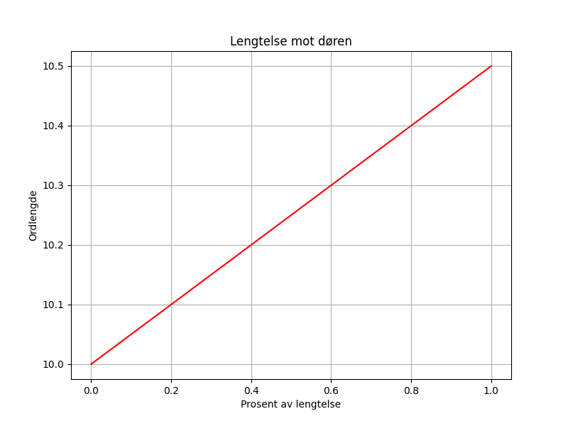

En ensom tøffel i gangen står, og drømmer om hvor foten går. Den lengter mot døren, mot verden så vid, mens den venter i stillhet på bedre tid.

import matplotlib.pyplot as plt
import numpy as np
# Dikt
dikt = """
En ensom tøffel i gangen står,
og drømmer om hvor foten går.
Den lengter mot døren, mot verden så vid,
mens den venter i stillhet på bedre tid.
"""
# Generer data basert på diktet
ord = dikt.split()
lengder = [len(ord[i]) for i in range(len(ord))]
tider = [i for i in range(len(ord))]
# Visualisering 1: Scatter plot av ordlengder over tid
plt.figure(figsize=(10, 6))
plt.scatter(tider, lengder, s=50, alpha=0.7)
plt.xlabel("Tid (ord indekser)")
plt.ylabel("Ordlengde")
plt.title("Ordlengder over tid")
plt.grid(True)
plt.savefig(output_path)
# Visualisering 2: En enkel linje som representerer lengtelsen
# (fokus på "lengter mot døren")
t = np.linspace(0, 1, 100)
lengde = 10 + 0.5 * t # En enkel funksjon som øker
plt.figure(figsize=(8, 6))
plt.plot(t, lengde, color='red', label="Lengtelse")
plt.xlabel("Prosent av lengtelse")
plt.ylabel("Ordlengde")
plt.title("Lengtelse mot døren")
plt.grid(True)
plt.savefig(output_path)execution_ok=True fallback_used=False image_ok=True